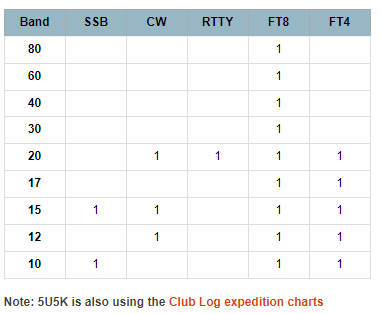

Al, How did you get those CW QSOs? I have QSOs for SSB, FT8 and FT4 but missed RTTY. I didn’t know he did that mode. Bill WB6JJJ From: wvdxc@groups.io <wvdxc@groups.io> On Behalf Of Al N6TA Well, he is back and working EU. I only got one decode at -10 dB. One caller has this already but needs a dupe on 17M FT4. Al N6TA  _._,_._,_ Groups.io Links: You receive all messages sent to this group. View/Reply Online (#15935) | Reply To Group | Reply To Sender | Mute This Topic | New Topic _._,_._,_ |